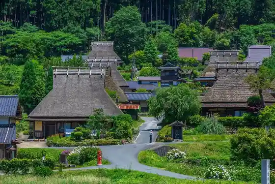
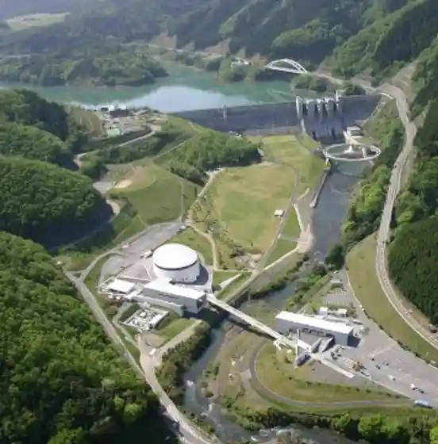
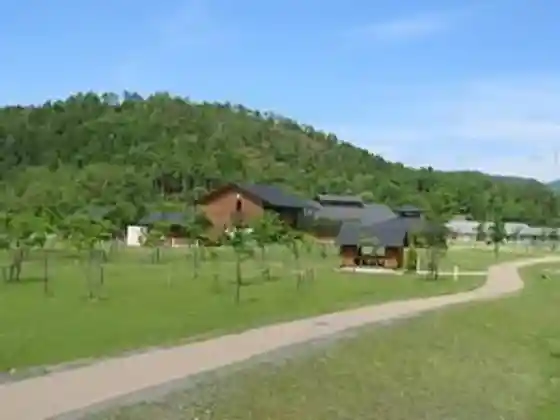
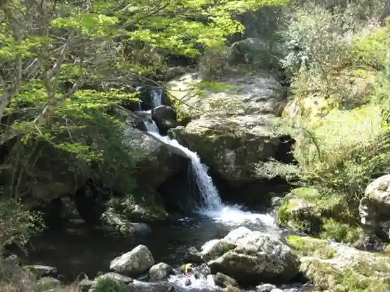

Reja & Supa Resort ASOBIYUKU Kyoto Ruri Kei Onsen
Nantan, Kyoto · 0771-65-5001
Kayabuki Village
Nantan, Kyoto · 0771-75-1906

Roadside Station Supuringusu Hiyoshi
Nantan, Kyoto · 0771-72-1526

Hapi Ro ! no Mori Kyoto (Kyotofuritsu Fumin no Mori Hiyoshi)
Nantan, Kyoto · 0771-72-1339

Kyotofuritsu Ruri Kei Nature Park
Nantan, Kyoto · 0771-68-0050

Hamingubado Tsuten Mizumi
Nantan, Kyoto · 0771-65-5022
Roadside Station Miyama Fureai Plaza
Nantan, Kyoto · 0771-75-5300
Kyoto Irumineshon (Shinasutajiahiruzu)
Nantan, Kyoto · 0771-65-5001
Roadside Station Kyoto Shinko Etsu Village
Nantan, Kyoto · 0771-68-1100
Matabe
Nantan, Kyoto · 0771-77-0258
Hiyoshi Dam Infogyararii
Nantan, Kyoto · 0771-72-0171
Miyama Town Shizen Bunka Village Kajika So
Nantan, Kyoto · 0771-77-0014
Kyotofuritsu Ruri Kei Shonen Nature no Ie (Guriinparu Ruri Kei)
Nantan, Kyoto · 0771-65-0190
GRAX PREMIUM CAMP RESORT Kyoto Ruri Kei
Nantan, Kyoto · 0771-65-5001
Oyamatsumi Shrine
Nantan, Kyoto · 0771-68-0057
Fusai Tera
Nantan, Kyoto · 0771-65-0686
Nantan Tourism Association
Nantan, Kyoto · 050-1724-4070
GRAX HANARE Kyoto Ruri Kei
Nantan, Kyoto · 0771-65-5001
Niji no Mizumi Patagorufu Ba
Nantan, Kyoto · 0771-75-0991
Mongaku Fureai Park
Nantan, Kyoto · 0771-42-5366
Miyama no Megumi Gyunyu Workshop
Nantan, Kyoto · 0771-75-0815
Hiyoshi Foresuto Resort Yama no Ie
Nantan, Kyoto · 0771-72-3535
O Shokuji Tokoro Kitamura
Nantan, Kyoto
Ippan Shadanhojin Nantan Miyama Kanko Machizukuri Kyokai
Nantan, Kyoto · 0771-75-1906
Kyoto Taishaku Ten
Nantan, Kyoto · 0771-42-3315
Mei San Kashi Tokoro (Kome Gi Fukuju Do)
Nantan, Kyoto · 0771-42-2245
Sonobe Castle Ruins
Nantan, Kyoto · 0771-62-0051
Seigen Tera
Nantan, Kyoto · 0771-42-3743
Miyama Ashi Nama Yama no Ie
Nantan, Kyoto · 0771-77-0290
Sonobe Byu Hotel
Nantan, Kyoto · 0771-62-1481
Oi Kawa no Uotsuri Ri
Nantan, Kyoto · 0771-72-1178
Miyama Folk Museum
Nantan, Kyoto · 0771-77-0587
Miyama Kawa no Uotsuri Ri
Nantan, Kyoto · 0771-75-0210
Kyo Yuba Tokoro Sei Ie
Nantan, Kyoto · 0771-75-1698
Tatsuoki Tera
Nantan, Kyoto · 050-1724-4070
Nantan Hiyoshi Sogo Undo Plaza
Nantan, Kyoto · 0771-68-0035
Tourist Farm Ko Wa Land
Nantan, Kyoto · 0771-77-0330
Oi Kawa Green Park
Nantan, Kyoto · 0771-42-5484
Chiisana Ai Art Museum
Nantan, Kyoto · 0771-77-0746
Kashikiri Furo Ryokan Kobushi So
Nantan, Kyoto · 0771-65-5001
Hase Undo Plaza
Nantan, Kyoto · 0771-75-1773
Kuhon Tera
Nantan, Kyoto · 0771-62-3704
Yukijirushi Megumiruku Kyoto Kojo
Nantan, Kyoto · 0771-43-2150
Miyama Ebisuzzu Garden Kafe
Nantan, Kyoto · 0771-75-2123
Minshuku Miyama
Nantan, Kyoto · 0771-75-0535
Kafe Bi Tamago
Nantan, Kyoto · 0771-77-0569
Ono Damu Park
Nantan, Kyoto · 0771-75-9110
Yagi Baioekorojii Center
Nantan, Kyoto · 0771-43-1128
Miyama EISA
Nantan, Kyoto · 0771-75-5125
Sato no Gohobi Miyama Do
Nantan, Kyoto
Kasuga Shrine
Nantan, Kyoto · 0771-68-0057
Namami Tenmangu Shrine
Nantan, Kyoto · 0771-62-0535
NIPPONIA Miyama Tsurugaoka Yama no Sato Hotarubi (HOTARUBI)
Nantan, Kyoto · 0120-203-099
Ryori Ryokan Yamazato Ryori Isobe
Nantan, Kyoto · 0771-75-0218
Ko Minka THYME
Nantan, Kyoto · 080-9012-6071
Kafegyararii Ayahana
Nantan, Kyoto · 0771-77-9038
JR Hiyoshieki Rentasaikuru
Nantan, Kyoto · 0771-68-0019
Nantan Kokusaikoryu Hall
Nantan, Kyoto · 0771-63-1777
Nantan Hiyoshi Town Local History Museum
Nantan, Kyoto · 0771-68-0069
Nishi Jo Tera
Nantan, Kyoto · 0771-75-0355
Ma Ki Shrine
Nantan, Kyoto · 0771-62-1169
Miyama Omoshiro Nomin Kurabu
Nantan, Kyoto · 0771-77-0884
Taji Shrine
Nantan, Kyoto · 050-1724-4070
Kuramoto Chokubai Mise Miyama Michi (Sake no Kan) Miyama Kura
Nantan, Kyoto · 0771-77-0007
Saikyo Miyako Paraguraida Renshujo
Nantan, Kyoto · 090-2285-7243
Ryori Ryokan Makura Kawa Ro
Nantan, Kyoto · 0771-77-0003
Saiko Tera
Nantan, Kyoto · 0771-42-3417
Nantan Tatebumi Ka Museum
Nantan, Kyoto · 0771-68-0081
Bi Juhachi
Nantan, Kyoto · 0771-75-5125
Jogan Tera
Nantan, Kyoto · 0771-76-0013
GOMA Kyotominami Tan Guest House
Nantan, Kyoto · 080-6596-2947
Kyu Ya
Nantan, Kyoto · 0771-77-0550
Karato Gorge
Nantan, Kyoto · 0771-75-1906
KAYA Villa
Nantan, Kyoto · 0771-75-5125
CASA Miyama
Nantan, Kyoto · 070-4414-5543
Fumon In
Nantan, Kyoto · 0771-72-0805
NIPPONIA Miyama Tsurugaoka Yama no Sato Taimatsu (MATSUAKARI)
Nantan, Kyoto · 0120-203-099
Tauta Sha
Nantan, Kyoto · 0771-77-0509
Kigusuriya
Nantan, Kyoto · 0771-76-0015
NIPPONIA Miyama Tsurugaoka Yama no Sato Mizuoto (MIZUOTO)
Nantan, Kyoto · 0120-203-099
Kenko Yasai City
Nantan, Kyoto · 0771-75-9110